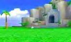
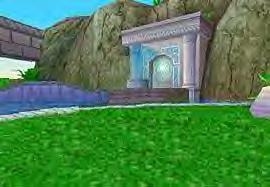
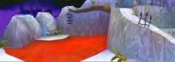

There are three different gardens for Chao.
There is only one garden available the first time you go in. There will actually be only one available for quite a while.
Once you have a Hero Chao, the Hero garden will be available for use. The same goes for the Dark Chao.
|

The garden to the right is the first garden you will have access to. This Garden contains two Chao eggs, which you will have to hatch. Also, in this Garden is the entrance to the Chao Race Stadium which you will find under the waterfall. |
|

You unlock the Hero Garden when you create a Hero Chao. This Garden floats on pink clouds and the center is marked by a fountain. Like the Normal Garden, you can also find the pumpkin hat here for your Chao to wear. |
|

You can unlock the Dark Garden by creating a Dark Chao. This Garden is filled with Tombs and Graves including what can only be described as a blood filled pool. This haunted Garden is quite unique. You can get the skull hat in this garden for your Chao to wear by digging with Knuckles or Rouge. |